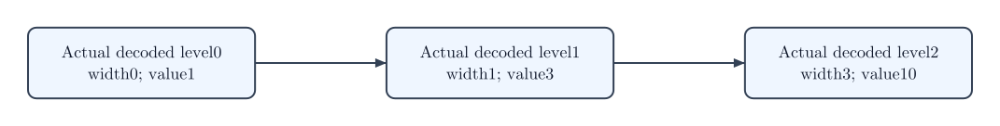
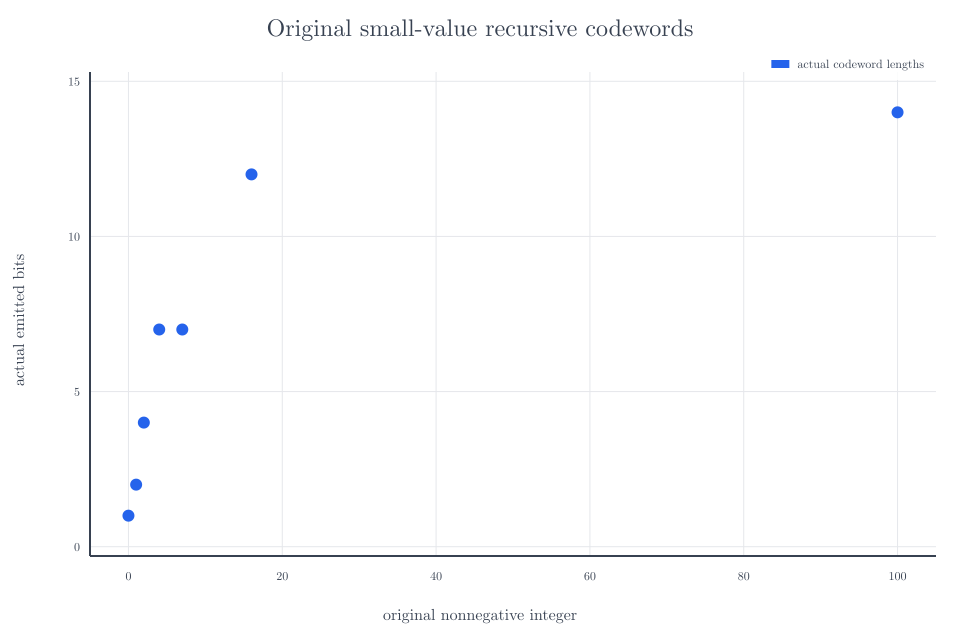
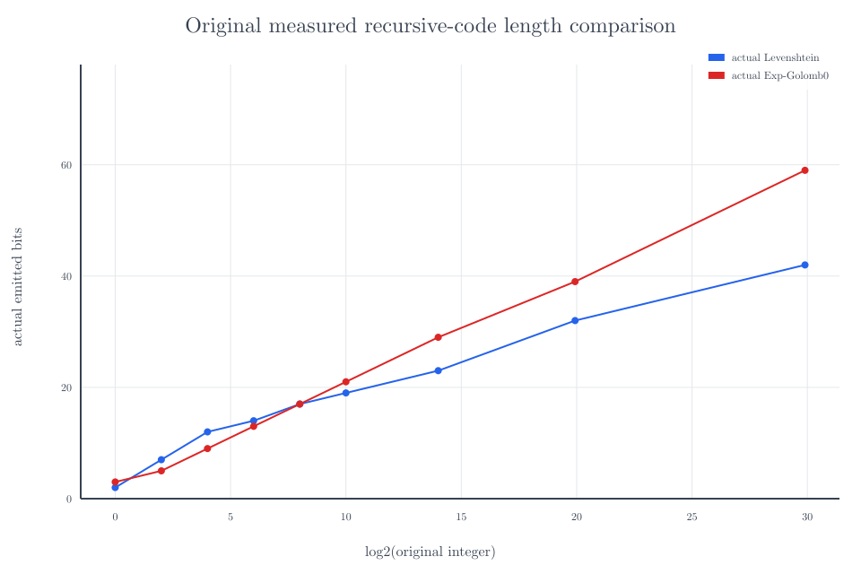
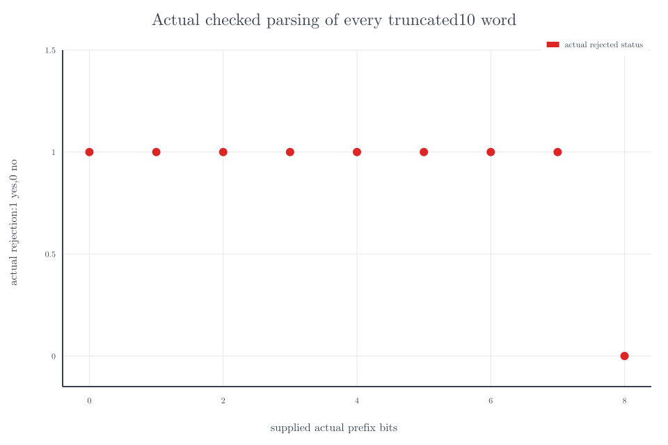

Levenshtein recursive integer coding
Abstract
A recursive length code makes a binary integer self-delimiting by describing the lengths needed to reconstruct it. We inspect actual emitted/read spans, retain the original codewords, round trip and Exp-Golomb length comparison, and fix the native decoder’s unsafe handling of truncated or unrepresentable prefixes. The code supports every unsigned64 value, including zero; it is unrelated to a text edit-distance computation.
Recursive lengths and a unary depth
Zero is0. For positive n, remove the leading1 from its binary representation, retain the remaining m=floor(log2(n)) bits, and repeat on m until the current value is1. If there are C such levels, emit C ones followed by0 and then the retained blocks from outermost length to original value. The leading1 of each block is implicit.
For n10, the actual level values are10,3,1. Reversed emission has the width0 implicit1 level, then one explicit bit1 reconstructing3, then three bits010 reconstructing10. The word is11101010. The native record includes the width0 level even though it emits no payload bits.
Decoding reads C, starts at N1, and repeats C−1 times: read N explicit low bits and prepend1. Thus each next block length is known before reading it. This establishes unique prefix decoding, provided every delimiter and block is present and the represented value fits the chosen integer domain. It does not make damaged streams error-correcting.
#include <dm/dm.hpp>
int main() {
std::filesystem::create_directories("build");
auto e = dm::algorithms::levenshtein_encode_trace({10});
auto d = dm::algorithms::levenshtein_decode_trace(e.bits, 1);
std::string bits;
for (bool b : e.bits)
bits += b ? '1' : '0';
std::print("Actual emitted bits {}; actual decoded value {}.\n\n| actual block start | actual explicit " "width | actual reconstructed value |\n| ---: | ---: | ---: |\n",
bits, d.values[0]);
for (auto &b : d.words[0].blocks)
std::print("| {} | {} | {} |\n", b.begin, b.width, b.value);
dm::graphics::Diagram g;
for (std::size_t i = 0; i < d.words[0].blocks.size(); ++i) {
auto &b = d.words[0].blocks[i];
auto id = std::to_string(i);
g.node(id, {6. * i, 0},
std::format("Actual decoded level{}\nwidth{}; value{}", i,
b.width, b.value));
if (i)
g.edge(std::to_string(i - 1), id);
}
g.save_svg("build/levcode_blocks.svg");
}Actual emitted bits 11101010; actual decoded value 10.
| actual block start | actual explicit width | actual reconstructed value |
|---|---|---|
| 4 | 0 | 1 |
| 4 | 1 | 3 |
| 5 | 3 | 10 |

Original codewords and complete round trip
Retain original values0,1,2,4,7,16,100, then encode and decode every integer from0 through10000 inclusive. That is10001 values, correcting the earlier loose wording “ten thousand.” The complete exact-count decoder now throws if the requested prefix is incomplete; it never silently returns fewer values. The figure shows actual codeword lengths on the original small values. Bit strings are ordinary short textual codewords, not image data.
#include <dm/dm.hpp>
int main() {
std::filesystem::create_directories("build");
auto t = dm::algorithms::levenshtein_encode_trace({0, 1, 2, 4, 7, 16, 100});
std::vector<double> x, y;
std::print("| original integer | actual emitted codeword | actual bit length |\n| ---: | --- | ---: " "|\n");
for (auto &w : t.words) {
std::string code;
for (std::size_t j = w.begin; j < w.end; ++j)
code += t.bits[j] ? '1' : '0';
std::print("| {} | {} | {} |\n", w.value, code, w.end - w.begin);
x.push_back(w.value);
y.push_back(w.end - w.begin);
}
std::vector<std::uint64_t> v;
for (std::uint64_t n = 0; n <= 10000; ++n)
v.push_back(n);
auto bits = dm::algorithms::levenshtein_encode(v);
auto d = dm::algorithms::levenshtein_decode_trace(bits, int(v.size()));
std::print("\nActual round-trip values {}; equality {}; actual emitted bits {}; actual consumed bits " "{}; actual read visits {}.\n",
v.size(), d.values == v, bits.size(), d.consumed_bits,
d.work.bit_visits);
auto p = dm::graphics::RPlot::create();
p.points(x, y, "actual codeword lengths", {37, 99, 235}, 6).title(
"Original small-value recursive codewords").x_label(
"original nonnegative integer").y_label("actual emitted bits").save_svg(
"build/levcode_original.svg");
}| original integer | actual emitted codeword | actual bit length |
|---|---|---|
| 0 | 0 | 1 |
| 1 | 10 | 2 |
| 2 | 1100 | 4 |
| 4 | 1110000 | 7 |
| 7 | 1110011 | 7 |
| 16 | 111100000000 | 12 |
| 100 | 11110010100100 | 14 |
Actual round-trip values 10001; equality true; actual emitted bits 203325; actual consumed bits 203325; actual read visits 203325.

Length growth and the original comparison
For n>0, let n_0=n and n_{j+1}=floor(log2(n_j)) until n_{C-1}=1. The actual word length is
The dominant term is log2(n), with smaller iterated-log overhead. Calling the whole length “iterated logarithmic” was incorrect. Original order0 Exp-Golomb comparison values are retained. That comparator supports zero by coding n+1, so it is not literally Elias gamma on positive n. The actual crossover is data dependent; neither code universally wins on small values or all source distributions. The plot uses real emitted lengths, without an entropy or optimal-compression claim.
#include <dm/dm.hpp>
int main() {
std::filesystem::create_directories("build");
std::vector<double> x, l, g;
std::print("| original integer | actual Levenshtein bits | actual order0 Exp-Golomb bits |\n| ---: | " "---: | ---: |\n");
for (std::uint64_t n : {1ULL, 4ULL, 16ULL, 64ULL, 256ULL, 1024ULL, 16384ULL,
1000000ULL, 1000000000ULL}) {
auto a =
dm::algorithms::levenshtein_encode({n}), b =
dm::algorithms::exp_golomb_encode({n}, 0);
std::print("| {} | {} | {} |\n", n, a.size(), b.size());
x.push_back(std::log2(double(n)));
l.push_back(a.size());
g.push_back(b.size());
}
auto p = dm::graphics::RPlot::create();
p.line(x, l, "actual Levenshtein", {37, 99, 235}, 2).points(x, l, "",
{37, 99, 235}, 4).line(x, g, "actual Exp-Golomb0", {220, 38, 38}, 2).points(x, g, "", {220, 38, 38}, 4).y_limits(0, 78).title("Original measured recursive-code length comparison").x_label("log2(original integer)").y_label("actual emitted bits").save_svg("build/levcode_lengths.svg");
}| original integer | actual Levenshtein bits | actual order0 Exp-Golomb bits |
|---|---|---|
| 1 | 2 | 3 |
| 4 | 7 | 5 |
| 16 | 12 | 9 |
| 64 | 14 | 13 |
| 256 | 17 | 17 |
| 1024 | 19 | 21 |
| 16384 | 23 | 29 |
| 1000000 | 32 | 39 |
| 1000000000 | 42 | 59 |

Exact prefixes and malformed controls
The parser checks every unary delimiter and binary block extent, rejects unary depth beyond the unsigned64 domain and checks block width at most63 before any shift or indexed payload read. Exactly count words must parse. Negative count fails; count0 reads no bits. Unread trailing bits are allowed by the prefix contract and are not validated or counted as visits. The new trace owns that full original tail and reports consumed_bits separately.
For the actual emitted word of10, test every strict truncation, including the empty input. Each must fail to produce the requested one complete value. A prefix0 followed by an unfinished1 tail successfully parses one zero and consumes only its first bit. These are real guarded parser calls; the plot reports observed rejection statuses, not simulated decoder behavior.
#include <dm/dm.hpp>
int main() {
std::filesystem::create_directories("build");
auto bits = dm::algorithms::levenshtein_encode({10});
std::vector<double> x, y;
std::print("| actual supplied prefix bits | actual request rejected |\n| ---: | --- |\n");
for (std::size_t k = 0; k <= bits.size(); ++k) {
std::vector<bool> prefix(bits.begin(), bits.begin() + k);
bool rejected = false;
try {
auto v = dm::algorithms::levenshtein_decode(prefix, 1);
} catch (const std::invalid_argument &) {
rejected = true;
}
std::print("| {} | {} |\n", k, rejected);
x.push_back(k);
y.push_back(rejected ? 1 : 0);
}
auto d = dm::algorithms::levenshtein_decode_trace({false, true}, 1);
std::print("\nActual prefix value {}; actual consumed bits {}; original owned stream bits {}; actual " "visited bits {}.\n",
d.values[0], d.consumed_bits, d.bits.size(), d.work.bit_visits);
auto p = dm::graphics::RPlot::create();
p.points(x, y, "actual rejected status", {220, 38, 38}, 6).y_limits(-.15,
1.5).title("Actual checked parsing of every truncated10 word").x_label("supplied actual prefix bits").y_label("actual rejection:1 yes,0 no").save_svg("build/levcode_guards.svg");
}| actual supplied prefix bits | actual request rejected |
|---|---|
| 0 | true |
| 1 | true |
| 2 | true |
| 3 | true |
| 4 | true |
| 5 | true |
| 6 | true |
| 7 | true |
| 8 | false |
Actual prefix value 0; actual consumed bits 1; original owned stream bits 2; actual visited bits 1.

Contracts and verification
Every unsigned64 integer is supported, including UINT64_MAX. The emitted vector<bool> has no specified byte serialization or endianness framing. The caller supplies the requested value count. Single-value append prepares the complete word and admits destination geometry before insertion, preserving the old prefix and avoiding partial append on failure. Encoding and parsing share producing kernels with their trace variants. Actual trace records count full owned input/output stream bits, original/decoded values, word records and block records; field scalars, capacities/output/runtime copies and bytes/RAM are excluded. Default cap is one million actual logical records, checked before append;0 disables only that optional cap. Complete trace or exception, never an incomplete result.
Independent Python integer/bitstring construction verified2135 values, emitted
words, decoded values and actual consumed/prefix/payload bit counts across power
boundaries, random full64-bit values and UINT64_MAX. Another10000 random
full64-bit emitted words and valid parsed streams matched the frozen
implementation exactly. Native tests retain the original10001-value range,
actual emitted/read spans,256-codeword prefix freedom, all representative
truncations, malformed depth/counts, unread tails, complete
quotas/append/empty/ownership controls. The complete ten-report batch passed77
native CTest cases,39 directly instrumented ASan/UBSan cases,106
compiled/executed public examples,479/479 scoped definitions and ten
representative clangd hovers. All4 complete report programs executed and all4
native figures were visually reviewed. HTML/Markdown computed result and
identical source/build/export figure bytes passed verification. Repeatable
receipts are retained under build/mepml-conversion/batch-194-203/.
References
V. I. Levenshtein(1968), On the Redundancy and Delay of Decodable Coding of Natural Numbers, Problems of Cybernetics20,173–179, original Russian text. The precise zero-inclusive recursive stream convention implemented here is stated above; its finite unsigned64 validation and prefix framing are native API contracts.